Imagem: MeepleBRGuerra assimétrica · Controle de território
Como jogar Root
Para quem nunca jogou2 a 4 jogadores60 a 90 min14+Edição Meeple BR
· Redação Elite Boardgamers
Resumo em 1 minuto
Você comanda uma facção da Floresta da Madeira, com regras próprias para pontuar, e vence quem chega primeiro a 30 pontos de vitória ou cumpre uma carta de domínio.
Todo turno tem Amanhecer, Dia e Anoitecer; para mover, você precisa governar a clareira de origem ou a de destino.
Na batalha, o atacante causa o dado maior e o defensor o menor, cada um limitado pelos guerreiros que tem na clareira.
Remover construção ou marcador inimigo vale 1 PV para todos; o resto dos pontos vem do jeito de cada facção.
Como você aprende: 5 etapas, da mesa montada à contagem de pontosLeitura do essencial: cerca de 14 min
À vista, só o essencial para jogar. O que abre com + é explicação, exemplo, exercício ou regra de caso especial: abra quando precisar.
Montar a mesa passo a passo
A montagem segue a página de preparação do Aprenda a Jogar p. 4, passos 1 a 7, e a preparação de cada facção, que está no verso do tabuleiro de facção e nas Leis de Root (seções 5, 6.3, 7.3, 8.3 e 9.3). Use o mapa do outono; o do inverno, no verso, é para quem já conhece o jogo p. 23.
Componentes do jogo base (Leis de Root, B.1, p. 18)
Componente
Quantidade
Tabuleiro com o mapa (outono de um lado, inverno do outro)
1
Tabuleiros de facção: Marqueses, Rapinas, Aliança e Malandro
4
Guerreiros de madeira
55: 25 dos Marqueses, 20 das Rapinas, 10 da Aliança
4 líderes e 2 Vizires das Rapinas; 3 personagens e 15 tarefas do Malandro
Cartas de resumo
16
Dados
2, com faces de 0 a 3
Marcadores de naipe
12, só para o mapa do inverno p. 23
Cartas de Instruções
4, só para o Passo a Passo
Uma partida de Root em andamento, em foto da editora brasileira: guerreiros dos Marqueses (laranja) espalhados pelo mapa, um guerreiro das Rapinas (azul) e os dois dados de batalha. Não é a montagem inicial. Imagem: MeepleBR
Quais facções entram (p. 4 e 22; Leis de Root, 5.2, p. 5)
Jogadores
Facções na primeira partida
Cartas de domínio
2
Marqueses e Rapinas (sem Malandro e sem Aliança)
Saem do baralho
3
Marqueses, Rapinas e Aliança (sem Malandro)
Ficam
4
Marqueses, Rapinas, Aliança e Malandro
Ficam
Outras combinações estão na p. 22 e na regra de alcance das Leis (5.2).
Preparação geralp. 4
Escolham as facções. Cada jogador pega o tabuleiro de facção e todas as peças listadas no verso dele p. 4. As Leis mandam sortear o jogador inicial e a posição de cada um na mesa (5.1.1).
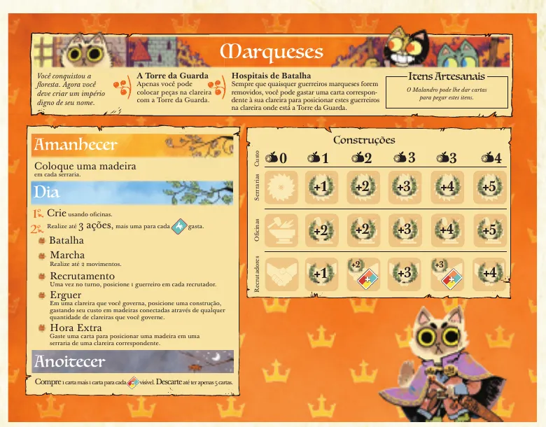
O tabuleiro de facção dos Marqueses: as três fases à esquerda, as trilhas de construções à direita. Ilustração: manual Meeple BR p. 4
Ponham os marcadores de pontuação de cada facção no "0" da trilha de pontuação, na borda de baixo do mapa p. 4.
Os quatro marcadores de pontuação: Marqueses, Rapinas, Aliança e Malandro. Ilustração: manual Meeple BR p. 4
Distribuam as cartas. Com 2 jogadores, tirem antes as 4 cartas de domínio (Leis de Root, 5.1.3; p. 22). Embaralhem o baralho comum e deem 3 cartas a cada jogador. Não confundam esse baralho com as cartas próprias de algumas facções p. 4.
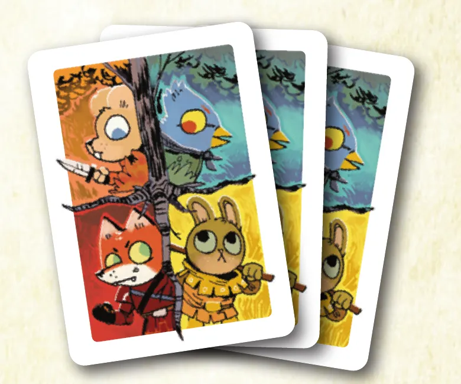
O verso das cartas do baralho comum de 54 cartas, de onde saem as 3 cartas de cada jogador. Ilustração: manual Meeple BR p. 4
Ponham as 4 ruínas nos 4 locais do mapa marcados com "R" p. 4.
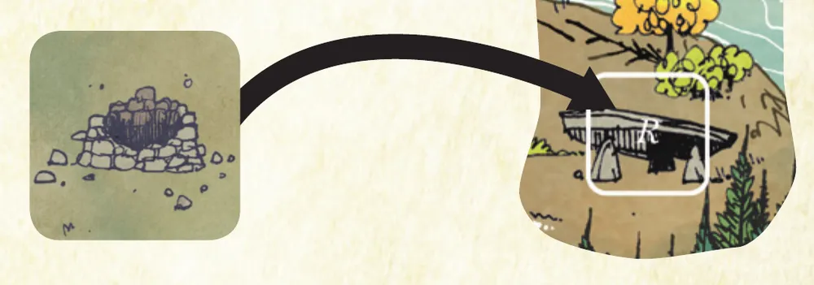
Uma ruína e o local marcado com "R" que ela cobre no mapa. Ilustração: manual Meeple BR p. 4
Montem o suprimento de itens: 12 itens nos espaços do topo do mapa, 2 Bolsas, 2 Botas, 1 Besta, 1 Martelo, 2 Espadas, 2 Chás e 2 Moedas (p. 4; Leis de Root, 5.1.5). Dos outros 11 itens, 4 são marcados com "R" e vão para debaixo das ruínas (passo 24) e 7 são marcados com "S", os possíveis itens iniciais do Malandro (passo 25); os que o personagem não usa voltam à caixa (Leis de Root, B.1.2, 9.3.4 e 9.3.5). Sem o Malandro na partida, os itens "R" e "S" ficam na caixa e as ruínas não escondem nada: só bloqueiam os locais delas o jogo todo (p. 6; a preparação das ruínas com itens é um passo do Malandro, 9.3.4).
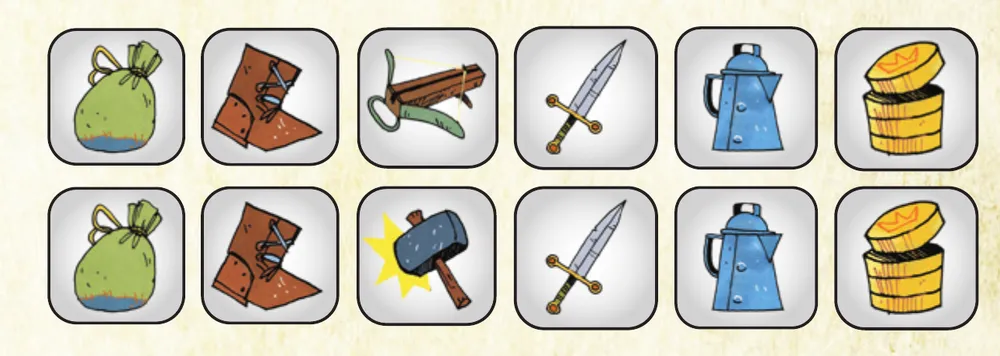
Os 12 itens do suprimento, em duas fileiras: Bolsa, Bota, Besta ou Martelo, Espada, Chá e Moeda. Ilustração: manual Meeple BR p. 4
Distribuam as cartas de resumo como quiserem e deixem os 2 dados perto do mapa p. 4.
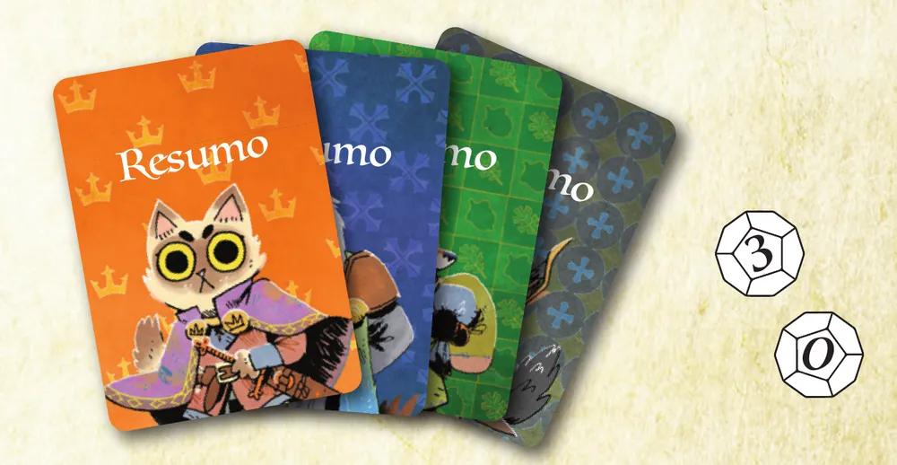
As cartas de resumo das facções e os dois dados, com faces de 0 a 3. Ilustração: manual Meeple BR p. 4
Preparem as facções, cada uma conforme o verso do seu tabuleiro, nesta ordem: Marqueses, Rapinas, Aliança, Malandro p. 4. Os passos 8 a 25 abaixo detalham cada uma.
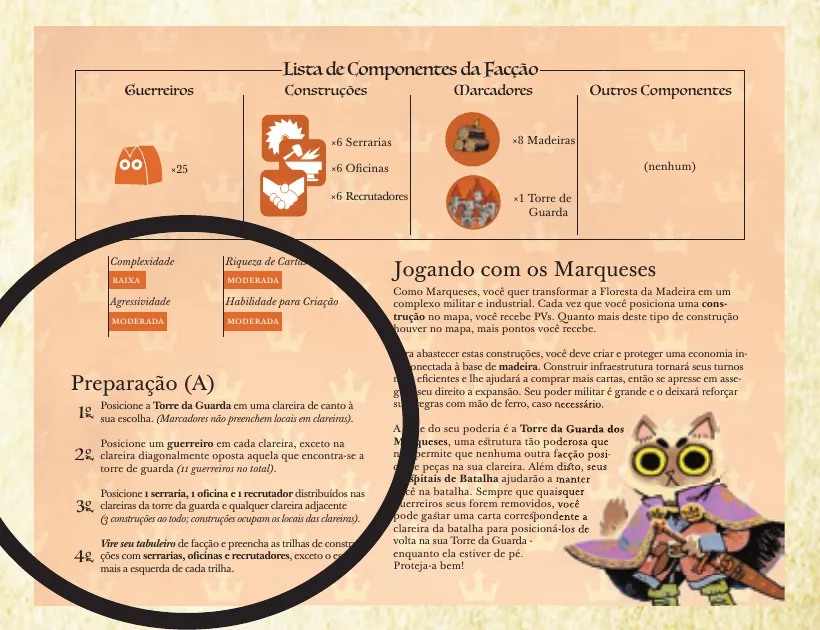
O verso do tabuleiro dos Marqueses: a lista de peças da facção e, no círculo, a preparação dela. Ilustração: manual Meeple BR p. 4
Marqueses (Leis de Root, 6.3, p. 5)
Separem 25 guerreiros e 8 madeiras ao lado do jogador.
Ponham a Torre da Guarda numa das 4 clareiras de canto. É a clareira inicial dos Marqueses.
Ponham 1 guerreiro em cada clareira do mapa, menos na clareira do canto diagonalmente oposto ao da Torre da Guarda: 11 guerreiros.
Ponham 1 serraria, 1 oficina e 1 recrutador na clareira da Torre da Guarda ou nas clareiras vizinhas a ela, como quiserem. Cada construção ocupa um local livre da clareira.
Encham as trilhas de construções do tabuleiro com as 5 serrarias, 5 oficinas e 5 recrutadores restantes, da direita para a esquerda, deixando vazio o espaço mais à esquerda de cada trilha.
Rapinas (Leis de Root, 7.3, p. 6)
Separem 20 guerreiros.
Ponham 1 ninho e 6 guerreiros numa clareira de canto que não seja a clareira inicial de outro jogador e, se possível, no canto diagonalmente oposto a uma clareira inicial. Com os Marqueses na mesa, é o canto oposto à Torre da Guarda, o único sem guerreiro deles.
Escolham 1 das 4 cartas de líder e ponham no espaço do líder; as outras 3 ficam ao lado, viradas para cima.
Ponham as 2 cartas de Vizir Leal nas colunas do Decreto que a carta de líder indica.
Ponham os 6 ninhos restantes na trilha de Ninhos, da direita para a esquerda; se sobrar espaço vazio, é o mais à esquerda. Os PV de cada espaço estão impressos na trilha, no tabuleiro (o manual mostra só um trecho, p. 12).
Aliança (Leis de Root, 8.3, p. 7)
Separem 10 guerreiros.
Ponham as 3 bases nos espaços delas no tabuleiro de facção. Cada base tem um naipe impresso: raposa, coelho ou rato (Leis de Root, 8.4.1).
Ponham os 10 marcadores de simpatia na trilha de Simpatia.
Comprem 3 cartas do baralho comum e ponham, viradas para baixo, como baralho de apoiadores. A Aliança não põe nada no mapa.
Malandro (Leis de Root, 9.3, p. 9)
Escolham uma carta de personagem (Ladrão, Funileiro ou Andarilho) e ponham o peão do Malandro em qualquer floresta.
Embaralhem as 15 tarefas e abram 3 ao lado do mapa.
Tirem as 4 ruínas do mapa, ponham debaixo de cada uma um dos itens marcados com "R" (Bolsa, Bota, Martelo e Espada), embaralhem e devolvam as ruínas aos locais "R".
Peguem os itens "S" da carta de personagem: Chá, Moeda e Bolsa vão virados para cima nas trilhas do canto esquerdo do tabuleiro; os outros, na Mochila, a área do tabuleiro do Malandro onde ficam os itens fora das trilhas p. 17. Ponham 1 marcador de relação de cada outra facção em "Indiferente".
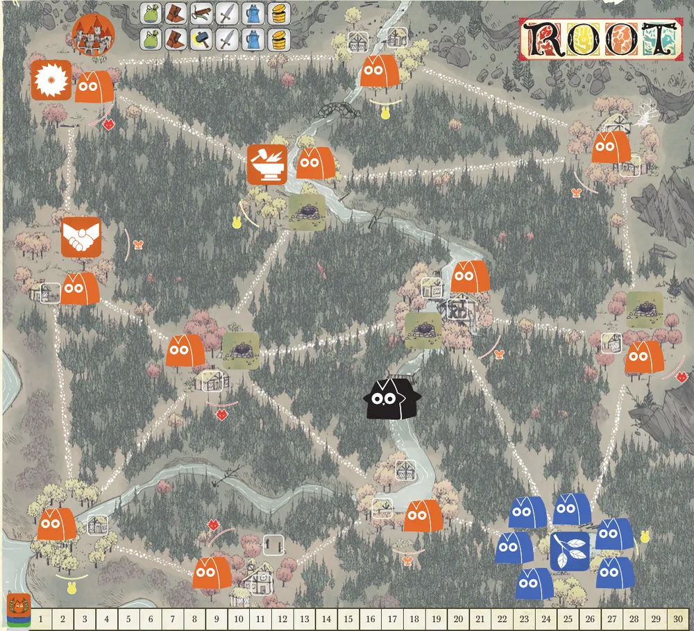
O mapa montado para quatro facções, na montagem fixa do Passo a Passo: Torre da Guarda no canto de cima, à esquerda, com a serraria na mesma clareira e a oficina e o recrutador em clareiras vizinhas; um guerreiro laranja em cada clareira menos no canto oposto, onde ficam o ninho e os 6 guerreiros azuis; o peão do Malandro numa floresta; ruínas nos locais "R" e os 12 itens no topo. Ilustração: manual Meeple BR (Passo a Passo através de Root, p. 3)
O que volta para a caixa: tabuleiros e peças das facções fora da partida; com 2 jogadores, as 4 cartas de domínio; os itens "S" que o personagem do Malandro não usa; os 12 marcadores de naipe (Leis de Root, 5.1.3 e 9.3.5; p. 23). Os líderes não escolhidos ficam ao lado das Rapinas.
Quem começa: o jogador sorteado no passo 1, e a vez segue em sentido horário (Leis de Root, 1.4.1 e 5.1.1).
Antes de começar, confira:
Marcadores de pontuação no "0" e 3 cartas na mão de cada jogador.
Ruínas nos 4 locais "R" e 12 itens no topo do mapa.
Marqueses: 11 guerreiros no mapa, Torre da Guarda num canto e 3 construções perto dela; 14 guerreiros e 8 madeiras no suprimento.
Rapinas: 1 ninho e 6 guerreiros no canto livre; líder escolhido e 2 Vizires no Decreto.
Aliança: 3 cartas viradas para baixo como apoiadores.
Malandro: peão numa floresta, 3 tarefas abertas, itens do personagem no tabuleiro e relações em "Indiferente".
Os Marqueses puseram a Torre da Guarda no canto de cima, à esquerda. Onde fica a única clareira sem guerreiro deles?
Os Marqueses põem 1 guerreiro em cada clareira, menos na diagonalmente oposta à Torre da Guarda, num total de 11 (Leis de Root, 6.3.3; p. 4). As Rapinas começam num canto oposto a uma clareira inicial, se possível (7.3.2).
Comece a jogar em 4 minutos
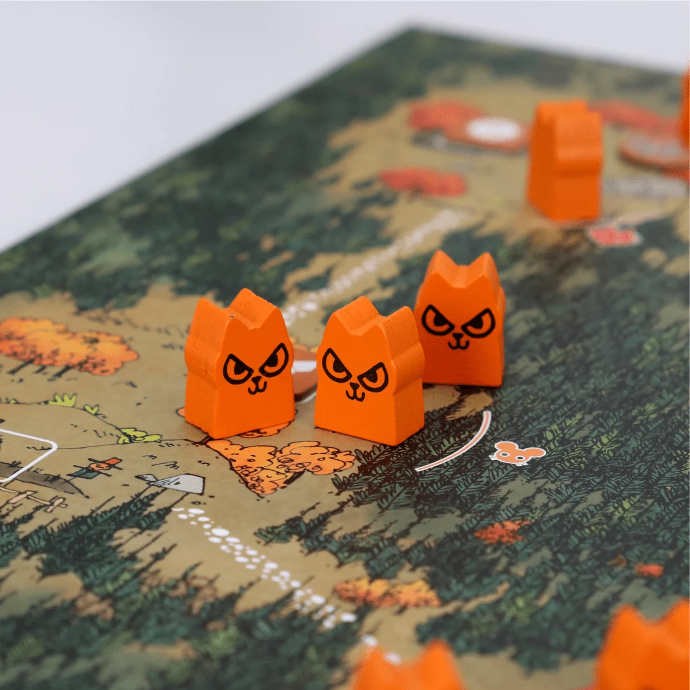
Imagem: MeepleBR
Meta: em 4 minutos de leitura, montar a mesa e jogar o primeiro turno de qualquer facção, sabendo o que todas fazem igual.
A ideia do jogo
Quatro facções disputam a Floresta da Madeira, um mapa de clareiras ligadas por caminhos. Vence quem chega primeiro a 30 pontos de vitória (PV). Cada facção pontua de um jeito próprio p. 2, mas todas obedecem às mesmas regras de governar, mover e batalhar p. 5 e 8.
Monte a mesa
A montagem completa, com figuras, está na seção "Montar a mesa passo a passo", logo acima. O essencial p. 4:
Facções: Marqueses e Rapinas com 2 jogadores, mais a Aliança com 3, mais o Malandro com 4. Sorteie quem começa.
Marcadores de pontuação no "0"; 3 cartas para cada jogador (com 2, sem as cartas de domínio).
Ruínas nos locais "R"; 12 itens no topo do mapa; dados ao lado.
Cada facção se prepara pelo verso do tabuleiro, na ordem Marqueses, Rapinas, Aliança, Malandro.
Seu primeiro turno
Todo turno tem três fases, nesta ordem: Amanhecer, Dia e Anoitecer. O seu tabuleiro de facção diz o que fazer em cada uma p. 2. Três regras valem para todos:
Governar. Você governa uma clareira se tem nela mais guerreiros e construções somados que qualquer outro jogador. Empate: ninguém governa p. 5.
Mover. Leve quantos guerreiros quiser de uma clareira para uma vizinha, isto é, ligada a ela por um caminho (Leis de Root, G.1.1). Você precisa governar a de origem ou a de destino p. 5.
Cartas. Cada carta tem um naipe: raposa, coelho, rato ou pássaro. O pássaro vale como qualquer naipe; mas se a regra pede pássaro, só pássaro serve p. 6.
No Anoitecer, as facções compram 1 carta, mais 1 para cada bônus de compra descoberto no tabuleiro, e descartam até ficar com 5 p. 11. O Malandro é a exceção: compra 1 mais 1 por Moeda p. 18.
Facção
O primeiro turno, em uma linha
Marqueses
Madeira nas serrarias; até 3 ações: Batalhar, Marcha, Recrutar, Erguer, Hora Extra p. 10
Rapinas
Põem 1 ou 2 cartas no Decreto e cumprem todas as ordens dele, da esquerda para a direita p. 12
Aliança
Espalha simpatia pagando com apoiadores e reforça o baralho de apoiadores p. 15 e 16
Malandro
Vira itens para fazer ações: Bota move, Tocha explora ruína p. 17 e 18
Ainda não precisa saber
Criar cartas: etapa 1. Batalha e emboscada: etapa 2. Os detalhes dos Marqueses e das Rapinas: etapa 3. Aliança e Malandro: etapa 4. Cartas de domínio: etapa 5.
Como a partida acaba
Quem chega a 30 PV vence na hora, mesmo no meio do turno de outro jogador (Leis de Root, 3.1). Além dos pontos da facção, todo mundo ganha 1 PV por construção ou marcador inimigo que remove e os PV de cada item que cria p. 7 e 8. As cartas de domínio dão outra forma de vencer (etapa 5).
Prefere ver? O vídeo do Duque mostra uma partida resumida, com a expansão Submundo; o segundo explica as regras da caixa base e está na página do jogo da Meeple BR. Eles complementam este guia; em caso de diferença, vale o manual.
ROOT + Expansão Submundo: Gameplay Resumida, canal Duque Board Games · abrir no YouTubeRoot: Regras da caixa base, canal 3DÜs · abrir no YouTube
0Antes de tudo: o que é este jogoOpcional
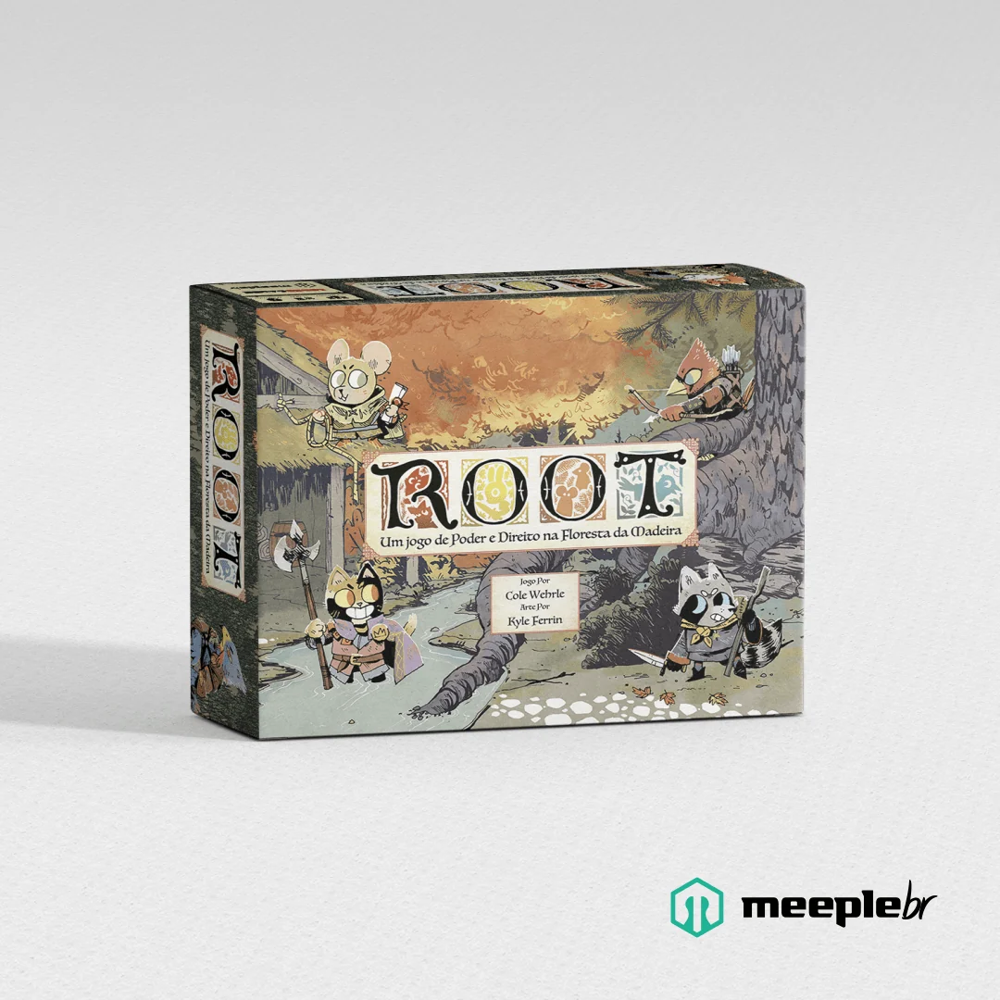
Imagem: MeepleBRAbrir esta seção
Root é um jogo de guerra e aventura para 2 a 4 pessoas, a partir de 14 anos, com partidas de 60 a 90 minutos, segundo a Meeple BR (página do produto). Cada jogador comanda uma facção de animais na Floresta da Madeira p. 2.
O que faz Root diferente é a assimetria: cada facção pontua de um jeito (construções, ninhos, simpatia, tarefas e relações) e tem regras próprias p. 2. Na mesma mesa, cada pessoa joga um jogo diferente.
O que une tudo é um núcleo pequeno: clareiras com naipe, governar, mover, batalhar com dois dados e um baralho comum em que cada carta vale pelo naipe e pelo efeito que pode ser criado (p. 5 a 9).
1Como este guia ensinaOpcional
Imagem: MeepleBRAbrir esta seção
São cinco etapas: o turno comum (mapa, governar, mover, cartas e criação); a batalha; Marqueses e Rapinas; Aliança e Malandro; e as formas de vencer. Cada etapa traz o porquê, o passo a passo e um exemplo resolvido; os exercícios ficam no fim dela. Toque numa opção para ver a resposta certa e a explicação. No fim, uma avaliação curta diz o que reler, e uma folha de consulta fica para a mesa.
2Etapa 1: o turno comum
Por que funciona assim
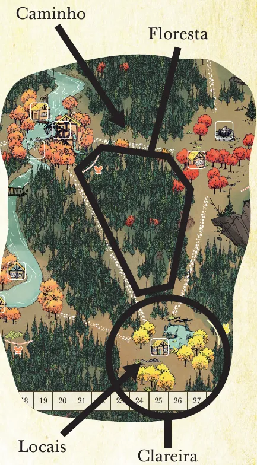
O mapa: as clareiras são os círculos com árvores coloridas; os caminhos as ligam; as florestas ficam entre os caminhos; os locais são os quadrados brancos onde entram construções. Ilustração: manual Meeple BR p. 5Regra adicional: Item que acabouRegra adicional: Efeito permanente repetidoRegra adicional: Ruínas sem MalandroVer um exemplo resolvidoPratique esta etapa: exercícios com respostas
3Etapa 2: batalhar
Por que funciona assim
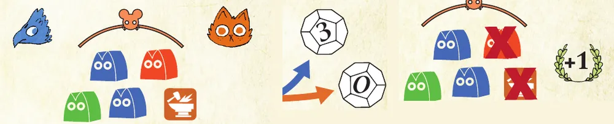
O exemplo de batalha do manual: as Rapinas (azul) atacam os Marqueses (laranja) numa clareira de rato; os dados dão 3 e 0; com só 2 guerreiros, as Rapinas causam 2 de dano, os Marqueses perdem duas peças e as Rapinas ganham 1 PV pela peça que não era guerreiro. Ilustração: manual Meeple BR p. 8Regra adicional: Emboscada que mata tudoRegra adicional: Dados iguaisVer um exemplo resolvidoPratique esta etapa: exercícios com respostas
4Etapa 3: Marqueses e Rapinas
Por que funciona assim
Coluna da trilha
1ª
2ª
3ª
4ª
5ª
6ª
Custo em madeira
0
1
2
3
3
4
PV de serraria
já no mapa
1
2
3
4
5
PV de oficina
já no mapa
2
2
3
4
5
PV de recrutador
já no mapa
1
2 e bônus de compra
3
3 e bônus de compra
4
Valores lidos no tabuleiro dos Marqueses ilustrado no manual p. 4.
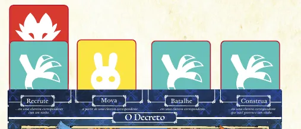
Um Decreto com cinco cartas: um pássaro e uma raposa em Recrutar, um coelho em Mover, um pássaro em Batalhar e outro em Construir. Ilustração: manual Meeple BR p. 13Regra adicional: Torre da GuardaRegra adicional: Hospitais de BatalhaRegra adicional: Desprezo pelo ComércioRegra adicional: Os quatro líderes das Rapinas
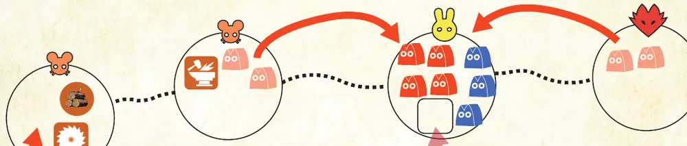
O exemplo de Dia dos Marqueses: dois movimentos de Marcha levam guerreiros laranja para a clareira de coelho, que passam a governar, e o espaço vazio dela recebe uma oficina nova. Ilustração: manual Meeple BR p. 11Ver um exemplo resolvidoPratique esta etapa: exercícios com respostas
5Etapa 4: Aliança e Malandro
Por que funciona assim
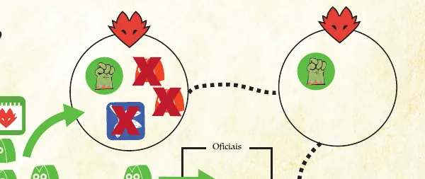
Uma revolta: na clareira de raposa simpática, o ninho das Rapinas e dois guerreiros dos Marqueses são removidos e a base de raposa entra, com guerreiros verdes. Ilustração: manual Meeple BR p. 15Regra adicional: Limite de apoiadoresRegra adicional: Lei MarcialRegra adicional: Base removida
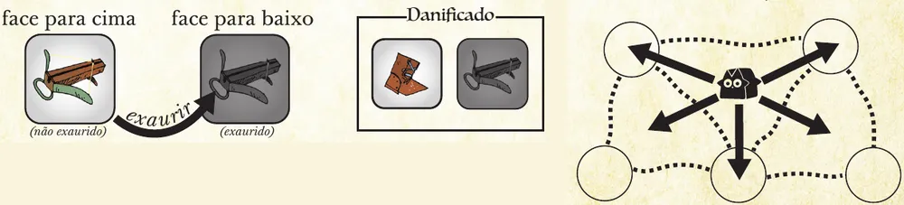
Os três estados de um item (virado para cima, exaurido e danificado) e os deslizamentos possíveis do peão do Malandro, para clareiras e florestas vizinhas. Ilustração: manual Meeple BR p. 17Regra adicional: Batalha do MalandroRegra adicional: Remoção completaRegra adicional: Aliados do MalandroRegra adicional: Ações especiais dos personagensVer um exemplo resolvidoPratique esta etapa: exercícios com respostas
6Etapa 5: vencer a partida
Imagem: MeepleBRPor que funciona assimRegra adicional: Coalizão do MalandroRegra adicional: Domínio ativoRegra adicional: Dois jogadoresVer um exemplo resolvidoPratique esta etapa: exercícios com respostas
7Situações especiaisOpcional
Imagem: MeepleBRAbrir esta seçãoSobre a edição: Aprenda a Jogar e Leis de RootSobre a edição: Nomes
8Avaliação finalOpcional
Imagem: MeepleBRAbrir esta seção
Responda sem voltar ao texto. Errou? A explicação diz qual etapa reler.
Quem governa uma clareira com 2 guerreiros das Rapinas e 2 guerreiros dos Marqueses?
Lordes da Floresta: as Rapinas governam empatadas (etapa 3; Leis de Root, 7.2.2).
Na batalha, o atacante tem 1 guerreiro e os dados dão 3 e 2. Quanto ele causa?
O dano dos dados é limitado ao número de guerreiros na clareira (etapa 2; p. 8).
Os Marqueses têm 4 madeiras e querem erguer um recrutador na coluna de custo 3. Fizeram Marcha e Recrutar. Ainda podem erguer?
São até 3 ações em qualquer ordem (etapa 3; p. 10).
A Aliança perde a base de rato. O que mais acontece?
Reler a etapa 4 (Leis de Root, 8.2.4).
O Malandro quer entrar numa clareira com guerreiros de uma facção hostil. Quantas Botas exaure?
Mover sem governar não dispensa as Botas; clareira com guerreiros hostis custa 1 Bota a mais (etapa 4; p. 19).
Com 3 jogadores, as Rapinas ativam um domínio de pássaro. Como vencem?
Reler a etapa 5 (Leis de Root, 3.3.1).
Critério: 5 ou 6 acertos, você está pronto para jogar. Menos que isso, releia as etapas indicadas.
9Para consultar durante a partida
Imagem: MeepleBR
Turno: Amanhecer, Dia, Anoitecer. No Anoitecer, todos compram 1 carta, mais 1 por bônus descoberto (o Malandro, por Moeda), e descartam até 5.
Governar: mais guerreiros e construções somados; empate, ninguém (Rapinas governam no empate). Mover: governar a origem ou o destino.
Batalha: emboscada (2 de dano; frustrável); dados: atacante o maior, defensor o menor, cada um limitado aos seus guerreiros; indefeso, +1; guerreiros saem antes de construções e marcadores; cada construção ou marcador removido, 1 PV.
Criar: peças artesanais nos naipes da carta, cada uma uma vez por turno; item vale os PV da carta (Rapinas: 1).
Facção
Amanhecer
Dia
Anoitecer
Marqueses
1 madeira por serraria
Criar; até 3 ações (+1 por pássaro): Batalhar, Marcha, Recrutar, Erguer, Hora Extra
Comprar e descartar
Rapinas
Mão vazia: compre 1; 1 ou 2 cartas no Decreto (no máximo 1 pássaro); sem ninho, ninho novo e 3 guerreiros
Criar; cumprir o Decreto ou tumulto
PV da trilha de Ninhos; comprar e descartar
Aliança
Revolta; espalhar simpatia
Criar, Mobilizar, Treinar
Operações por oficial: Mover, Batalhar, Recrutar, Organizar; comprar e descartar
Página do produto, Meeple BR (2 a 4 jogadores, 60 a 90 minutos, 14 anos ou mais, links dos manuais e dos vídeos): https://meeplebr.com/product/root/ (consultada em 06/11/2026).
Regras conferidas nos manuais oficiais da edição brasileira, publicados pela Meeple BR: o guia Aprenda a Jogar (24 páginas, arquivo de fevereiro de 2021), que é a base deste tutorial, e As Leis de Root (oitava versão, 09/12/2022), a referência de regras, que vale quando os dois diferem. As páginas sem outra indicação são as do Aprenda a Jogar; as das Leis vêm com o número da regra. Este guia cobre o jogo base, com as quatro facções da caixa; as expansões ficam de fora.